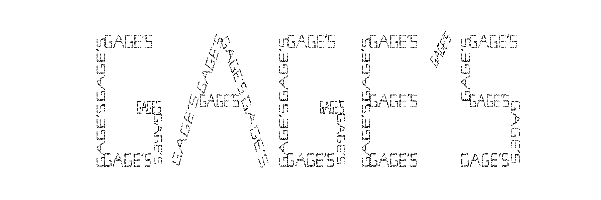

You can make fractals into whatever shape you like. Here is a downloadable jupyter notebook that can take almost any string* and convert it to a fractal. The style is reminiscent of old alalog clock displays.
*I have not programmed in most lower-case letters or special symbols.
Last Updated: 6/9/2021